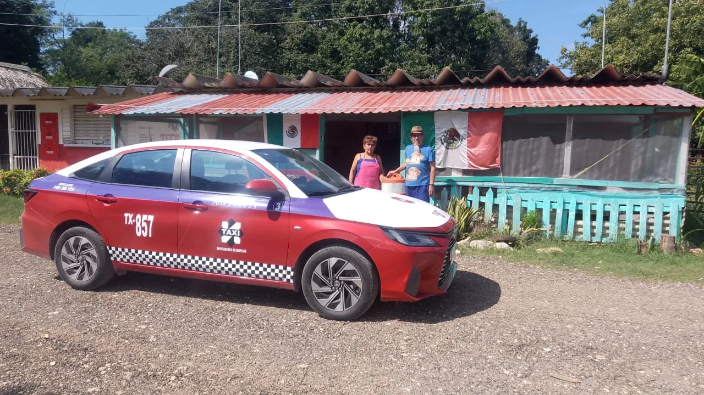
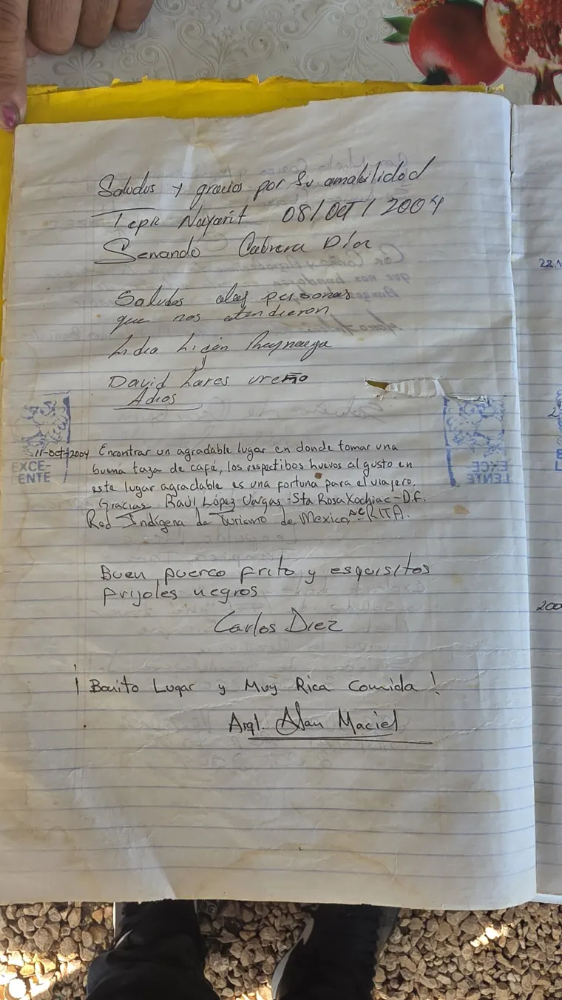
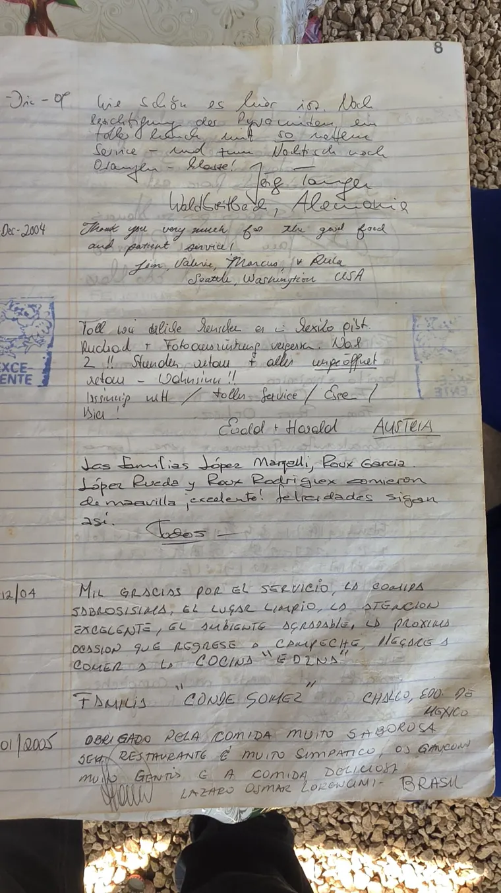

Inicio › Lupita y Jaime
Dónde comer cerca de Edzná
Lupita y Jaime, comida casera a 1 km de Edzná
Tienda y comedor en Uzahzil-Edzná, rumbo a Cayal. Desayunos y comida típica campechana; todas las comidas llevan frijol, arroz y salsa.
Siempre hay
| 🥩 Puerco frito | |
| 🥩 Bistec de res | |
| 🥗 Salpicón | |
| 🍗 Pechuga de pollo, milanesa o a la plancha | |
| 🍳 Desayunos |
Todas las comidas llevan frijol, arroz y salsa. También tienen tienda.
🕖 Abren de 7 am a 6 pm

📅 Por encargoSi apartas con tiempo te lo preparan para ese día: puerco entomatado, puerco en salsa de chile guajillo, pollo adobado con papa, escabeche de pollo y puchero vaquero (lleva chaya, costilla de puerco y arroz).
Encargar por WhatsApp →
Su libreta de visitas desde 2004
Por más de 20 años, visitantes de México, Alemania, Austria, Holanda, Italia, Suiza, Japón, Brasil, Estados Unidos y más han dejado sus saludos en la libreta de Lupita y Jaime.


🚕 ¿Vas a Edzná?En nuestro tour a Edzná podemos parar aquí a comer de regreso. Dínoslo al reservar.
Reservar viaje a Edzná
Ver tour a Edzná →
Preguntas frecuentes
¿Dónde comer cerca de Edzná?
Con Lupita y Jaime, a 1 km de la zona arqueológica rumbo a Cayal, en Uzahzil-Edzná. Desayunos y comida típica de 7 am a 6 pm.
¿Puedo encargar comida?
Sí. Llama o escribe al 981 104 8109 con tiempo y te preparan platillos por encargo como puchero vaquero o escabeche de pollo.
¿Cómo llego desde Campeche?
En taxi Taxicel: el viaje a Edzná con espera cuesta $1,800 y podemos parar a comer aquí.